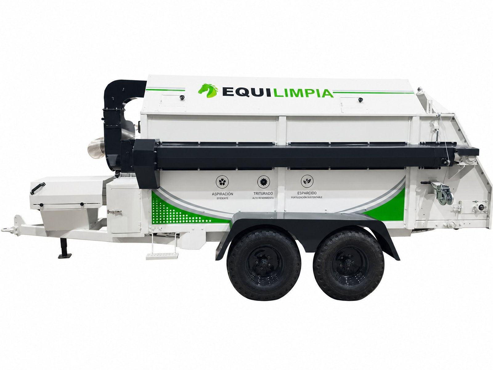
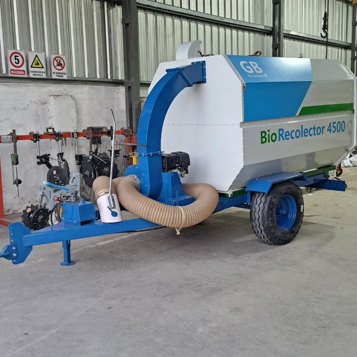

Maquinaria que transforma
residuo en resultado
Diseñamos y fabricamos máquinas robustas para la gestión de residuos orgánicos: menos horas de trabajo manual, menos olores y plagas, y un residuo que vuelve al suelo como recurso.
Dos líneas, un mismo objetivo
Cada máquina integra en una sola unidad procesos que normalmente requieren varias herramientas y mucho más tiempo de trabajo manual.

Del establo al suelo, en un solo paso
Aspira, tritura y esparce el residuo de los boxes en una sola pasada. Diseño propio, único en el país.
Aspiración
Turbina centrífuga con manguera de 8" que aspira el residuo directamente del box.
Traslado higiénico
Tolva hermética de 5,5 m³ (hasta 500 kg), sin contacto manual con el residuo.
Esparcido
Rotores con púas dispersan el material de forma uniforme, como fertilizante.
- Reduce el tiempo de limpieza diaria
- Se puede usar con menos personal
- Baja el amoníaco y las plagas del establo
- Devuelve nutrientes al suelo como abono
Ficha técnica completa
Aplicaciones: haras y studs, canchas de polo, centros de adiestramiento, establecimientos ecuestres escolares, y adaptable a otros usos ganaderos, como criaderos de aves.
Equilimpia en video

Recicla tu entorno, cultiva tu futuro
Junta, tritura y guarda hojas y restos de poda en una sola máquina. Anda con motor propio o enganchada al tractor.
Recolección
Turbina con manguera de 4-5" y caudal de aire de 1000-1500 m³/hora.
Trituración
Rodillo interno que reduce el volumen de 5 a 7 veces en una tolva de 450-550 L.
Descarga
Compuerta tipo guillotina, descarga por gravedad, lista para compostar.
- Reduce el tiempo de limpieza
- Se puede usar con menos personal
- Reduce mucho el volumen del residuo
- Deja el material listo para compostar
Ficha técnica completa
Aplicaciones: municipios y espacios verdes públicos, empresas de paisajismo, parques y clubes privados, viveros e instituciones (escuelas, hospitales, universidades).
El Biorecolector 4500 en funcionamiento
Así se usan nuestras máquinas
Ejemplos de uso según el tipo de establecimiento y su tamaño.
Haras Los Turfistas · 120 boxes
Socio estratégico en el desarrollo de Equilimpia, con reducción de horas de trabajo y compost reutilizable mensual.
80 boxes
Menos moscas en pocas semanas al eliminar la acumulación de residuos, con menor gasto en insecticidas.
Galpones avícolas
Equilimpia adaptada para levantar la cama de los galpones, reduciendo el trabajo manual y devolviendo el residuo como abono para el campo.
Espacios verdes públicos
Dos unidades de Biorecolector 4500 con motor autónomo para parques y plazas.
40-50 propiedades
Tiempo de limpieza por propiedad muy reducido, permitiendo atender más propiedades con el mismo personal.
Procesamiento en tiempo real
Se libera espacio de acopio y se acelera el compostaje al procesar el residuo en el momento.
Los escenarios de centro ecuestre, criadero de gallinas, municipio, paisajismo y vivero son ejemplos ilustrativos de aplicación, no testimonios de clientes con nombre y apellido. El caso de Haras Los Turfistas corresponde a nuestro socio estratégico fundacional en el desarrollo de Equilimpia.
Una empresa familiar que nació de un problema real del campo
SINC Maquinarias es una pyme familiar argentina con base en Las Parejas, Santa Fe. Nacimos junto a un socio estratégico del sector ecuestre que necesitaba resolver algo que nadie resolvía: la limpieza manual e intensiva de boxes. De ahí surgió Equilimpia, y luego el Biorecolector 4500 para espacios verdes.
No buscamos maximizar el volumen de ventas. Diseñamos máquinas robustas para quienes valoran la calidad y el resultado por sobre el precio.
"Hoy no operaríamos sin Equilimpia. Es una inversión que paga dividendos todas las semanas."